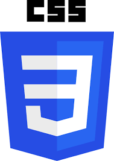
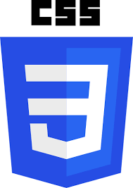
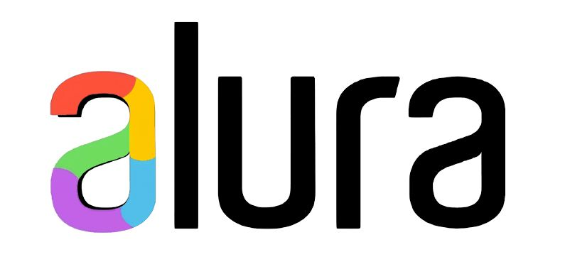
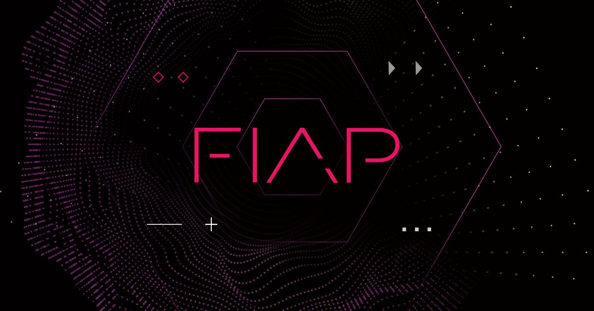

ENGENHARIA DE SOFTWARE
O engenheiro de software é um profissional que está sendo muito requisitado no mercado de trabalho Brasileiro no momento atual. Por isso, nós da EngenhaTec críamos essa página Para aprensenta o mundo do engenheiro de software
Ele pode atuar no desenvolvimento, projeto e manutenção de sistemas, aplicativos e programas, além de possuir conhecimentos aprofundados em eletrônica, sistemas embarcados, redes de computadores e arquitetura de computadores, ou seja, ele possui um conhecimento tanto da parte física dos computadores (Hardware) quanto da parte de desenvolvimento de sites, apps e outros(software). A remuneração média desse profissional é R$ 10.307 sendo que esse cargo pode chegar a render a faixa salarial estimada de R$ 259.904 por ano, em uma grande empresa do setor, como a Google.
O CURSO
O bacharelado de Engenharia de Software dura, em média, quatro a cinco anos, podendo ser encontrado em modalidades presencial e a distância. A grade curricular inclui disciplinas de matemática, lógica, análise de problemas, gestão de projetos e inovação, sendo que além disso
Esses universitarios aprendem diversas linguagens de programação para esse propósito, um exemplo disso é o HTML e o CSS usados para produzir essa página. Cada um deles tem sua função, o HTML é uma linguagem de marcação, para os leigos, ele é o corpo do site, já o CSS seria a aparência, única em cada site.
 

UNIVERSIDADES
O Brasil atualmente investe muito em tecnologia, sendo assim, diversos cursos de tecnologia como a engenharia de software estão começando a ser ministrados em muitas universidades dentro do país.
Maior plataforma de ensino de programação brasileira, contando com uma comunidade ativa e cursos em todas as áreas da tecnologia.
Faculdade pública de São Paulo, considerada uma das melhores faculdades de tecnologia do Brasil entre 4 e 5 estrelas no mec
Maior Universidade Brasileira, oferece diversos cursos sobre tecnologia, incluindo engenharia de software
@pctheone 🏃🏻♂️✍🏼💻 #developer #tecnologia #programação #code #dayinthelife ♬ original sound - Guilherme 🥷🏼
Acesse aqui o site Quero bolsa para conhecer mais a fundo a respeito de universidades com esse curso.
Curiosidades
A pessoa considerada "pai" da programação foi Alan Turing, pois estabeleceu as bases para a ciência da computação moderna na década de 1930.
PROJETO
Esse projeto foi criado com o propósito de ilustrar a profissão de engenheiro de software dentro do mercado. Visto que ele é responsável pelo software é de esperar que eles sejam capazes de programar sites como esse.
Então é isso! Espero que você tenha gostado do nosso artigo.